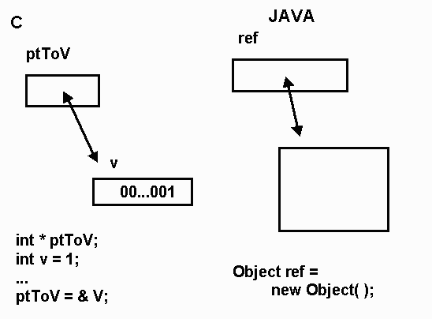
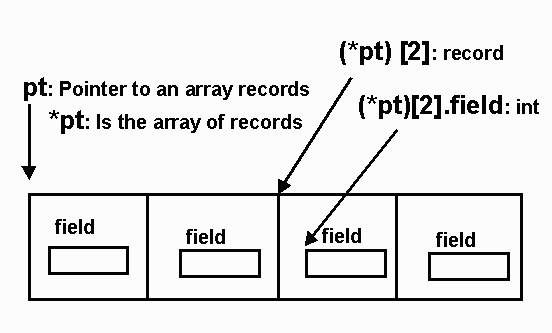
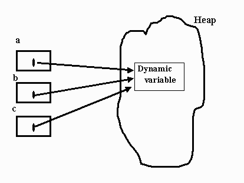
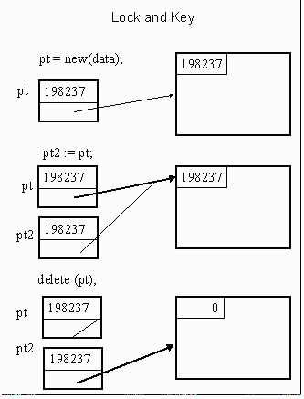

- typedef struct {
- int val;
tree* right;
tree* left;
tree* root;
- data Tree v = Nil | Node v (Tree v) (Tree v)
When are two types the same? -- Type Equivalence
- Structural Equivalence
Arrays
Records
- record
- x : integer;
y : character;
record
- a : integer;
b : character;
- type T1 is range 1..10
type T2 is range 1..10
- subtype S is T1 range 2..5
x, y: array(1..9) of integer;
- is equivalent to:
type internal_type2 is array (1..9) of integer;
- x: internal_type1;
y: internal_type2;
C
- int x [ 9 ];
int y [ 9 ];
Declaration Equivalence
- x,y: array[1..10] of
- record a : integer;
b : char
- typedef char *str;
str p;
char *q;
Type Checking
- type T1 is range 1..99;
subtype S is T1 range 1..9;
- X : T1;
Y : S;
- Y := 6;
X := 2 * Y;
Y := X;
Pointer/Reference Types
- Reference of a variable though the r-value of another variable.
- Introduced to HLL by PL/I (1966)
- Two sets of bindings

- Dereferencing
- Java, not needed
- Ada (access type) pt.all
- Pascal pt^
- C, C++, pt ->, *pt
- Dangling pointer problem
- Deallocation leaves a pointer's value binding invalid
- Garbage -
- No current reference to allocated memory (memory leaks)
- Dereferencing a nil pointer
C Example
| typedef struct {
…. int field; …. } RecType; typedef RecType ArrType[4]; ArrType *pt; |
 |
Ada
type RecType is
- record
Field: Integer;
..
end record;
type PtType is access ArrType;
pt: PtType;
pt -- pointer to array of records
pt.all -- array of records
pt.all[ 3 ] -- record
pt.all[ 3 ].Field -- integer
Dangling Pointers
Creations of two Dangling Pointers- /* ppp is the address of a pointer */
int * dangle ( int ** ppp) {
- int p = 5; int m = 21;
*ppp = &p /* dereference ppp to get the pointer whose address was passed. */
return &m;
main () {
- int k = 17;
int *pm, *pk = &k;
pm = dangle(&pk); //both pm and pk point to deallocated memory.
Fischer&Grodzinsky, The Anatomy of Programming Languages, page 237
| // header.h
class HeapObject{ public: HeapObject();
int BigArray[1000]; int nothing; }; class StackObject{
private:
|
|
- gcc -ansi mainfile.cpp Source.cpp -o leak.exe
- The following did compile!
- gcc mainfile.cpp Source.cpp -o leak.exe
- A reference type (usually) is like pointer type with automatic dereferencing, and only assignment and equality operators.
- It can be alias for an object
- All non-primitive types in Java are reference types
- C++ has reference type that is usually used for parameter passing
- r-value of the Reference can not be separated from the l-value of the object.
- r-value of a Pointer can be separated from the l-value of the object pointed to
- pt and (*pt) are different!
- Require Pointers to be typed
- Do not allow pointer arithmetic
- Make memory management the job of the language, NOT the job of the programmer
- Remember dangling pointers point to deallocated storage.
- Never allow deallocation of memory.
- Creates lots of garbage
- Internally correct.
- Tombstone by Lomet (1975)
- Expensive in time and space
- Good side effect- easy to implement storage compaction
- Used by Macintosh OS for references to system objects such as files and window descriptors.
- Lock and Key by Fischer and LeBlanc 1977, 1980
- Lisp pioneered garbage collecting. Haskell, Ml, Lisp, and scheme (functional programming language) rely on garbage collectors.
- Object oriented language like Java, SmallTalk, Simula 67 and Eiffel also rely on garbage collectors for the reclaimation of memory during execution.
- C++ is the notable exception. C++ retains the allocation and deallocation rules of C.
- Fundamental techniques
- Reference counters
- eager approach
- Mark and sweep
- lazy approach
Handling Pointer Problems
Dangling Pointer Problem

What can you do to Avoid Dangling Pointers (From a Language point of view)

